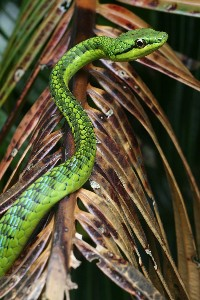
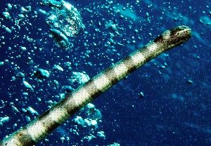
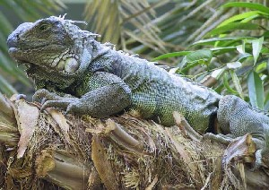
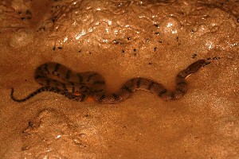
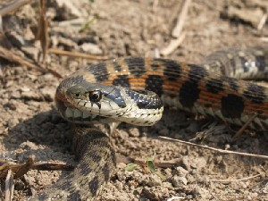
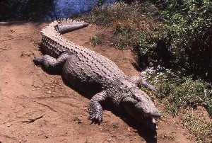
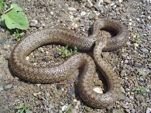
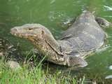
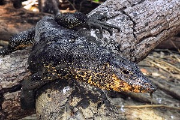
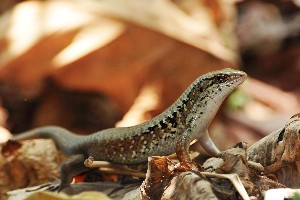

रेंगने वाले जंतु
 |
bɑrɑlo बारालो N सं. a kind of smooth, shiny, non-poisonous snake with a green-bronze back that lives in the coconut tree; नारियल के पेड़ में रहने वाला हरे रंग का बिना विष वाला चमकदार सांप जिसकी त्वचा चिकनी व फिसलन युक्त होती है. SD: reptile, रेंगने वाले जंतु. NT: The snake is known for its oily secretions, which were supposedly very beneficial for the skin. Young girls catch it to rub it on their bodies as a moisturizer. Generally, while one girl holds the mouth, another rubs the struggling snake against her body and face. Apparently, the struggle increases and enhances the secretion. इस सांप की त्वचा से एक खास तरह का रस निकलता है जो त्वचा के लिए फायदेमंद माना जाता है। अण्डमानी लड़कियां इस सांप को पकड़कर अपनी त्वचा पर रगड़ती हैं। प्रायः जब एक लड़की इसके मुंह को पकड़ती है, तब दूसरी लड़की इस सघंर्षरत सांप को अपने शरीर और चेहरे पर रगड़ती है। नतीजतन इस सांप का सघंर्ष बढ़ने से अधिक रस निकलता है।.
beɔʈɔ बेऔटौ VAR: beɔːtɔ बेऔऽतौ; biɔʈo बीऔटो; beyoːʈɔ बेयोऽटौ. N सं. a kind of water snake with a criss-cross pattern on its skin; आड़ी-तिरछी चमड़ी वाला पानी का सांप. SD: reptile, रेंगने वाले जंतु.
 bol5 बोल VAR: boːl बोऽल. N सं. a freshwater snake; मीठे पानी का सांप. SD: reptile, रेंगने वाले जंतु. SEE: bol1 ‘cane’ ‘बेंत बोलhm:{1}’; bol2 ‘fish’ ‘मछली बोलhm:{2}’; bol3 ‘rope’ ‘रस्सी बोलhm:{3}’; bol4 ‘run away’ ‘भाग जाना बोलhm:{4}’; bol6 ‘tree’ ‘पेड़ बोलhm:{6}’.
bol5 बोल VAR: boːl बोऽल. N सं. a freshwater snake; मीठे पानी का सांप. SD: reptile, रेंगने वाले जंतु. SEE: bol1 ‘cane’ ‘बेंत बोलhm:{1}’; bol2 ‘fish’ ‘मछली बोलhm:{2}’; bol3 ‘rope’ ‘रस्सी बोलhm:{3}’; bol4 ‘run away’ ‘भाग जाना बोलhm:{4}’; bol6 ‘tree’ ‘पेड़ बोलhm:{6}’.
 cɑlemo2 चालेमो N सं. edible, red salt-water snake; खारे पानी का लाल रंग का खाद्य सांप. SD: reptile, रेंगने वाले जंतु. SEE: calemo1 ‘fish’ ‘मछली चालेमोhm:{1}’.
cɑlemo2 चालेमो N सं. edible, red salt-water snake; खारे पानी का लाल रंग का खाद्य सांप. SD: reptile, रेंगने वाले जंतु. SEE: calemo1 ‘fish’ ‘मछली चालेमोhm:{1}’.
coːɖimo चोऽडीमो N सं. newt; गोह. SD: reptile, रेंगने वाले जंतु.
 |
 ɖolemu डोलेमू VAR: ɖolemo डोलेमो. N सं. chameleon; a kind of lizard; एक प्रकार का गिरगिट; छिपकली. Coryphophylax. SD: reptile, रेंगने वाले जंतु. NT: It sticks out its neck. अपनी गर्दन ज़ोर से बाहर की ओर निकालता है।.
ɖolemu डोलेमू VAR: ɖolemo डोलेमो. N सं. chameleon; a kind of lizard; एक प्रकार का गिरगिट; छिपकली. Coryphophylax. SD: reptile, रेंगने वाले जंतु. NT: It sticks out its neck. अपनी गर्दन ज़ोर से बाहर की ओर निकालता है।.
 |
ɖoletmu डोलेत्मू N सं. a kind of reptile called the Andaman Islands day gecko; एक प्रकार का रेंगनेवाला जीव. Phelsuma andamanense. SD: reptile, रेंगने वाले जंतु. NT: Found only in the Andamans. It is emerald green with a bright red tongue. पन्ने जैसा हरे रंग का, चमकीली लाल जीभ वाला यह जीव अण्डमान द्वीपों पर मुख्यतः पाया जाता है।.
ɖulimo डूलीमो VAR: ɖolemo डोलेमो; ɖulemo डूलेमो. N सं. chameleon; lizard; गिरगिट; छिपकली. SD: reptile, रेंगने वाले जंतु.
fɑːrɑːsuːbi फाऽराऽसूऽबी N सं. a kind of snake; एक प्रकार का सांप. SD: reptile, रेंगने वाले जंतु.
jeto जेतो VAR: jeːtʰo जेऽथो. N सं. an edible snake that lives in creeks; एक प्रकार का खाद्य सांप जो खाड़ी में रहता है. SD: reptile, रेंगने वाले जंतु.
jobo जोबो Etym: Bea; बेया. N सं. a variety of snake; एक प्रकार का सांप. SD: reptile, रेंगने वाले जंतु.
 |
koɖbelo कोडबेलो N सं. Banded Sea Krait, non poisonous; एक प्रकार का विषहीन समुद्री सांप. SD: reptile, रेंगने वाले जंतु.
konɑːsuːbi कोनाऽसूऽबी MORPH: konɑː-suːbi. VAR: konɑː-šubi कोनाऽशूबी. N सं. a kind of wild snake; जंगली सांप. SD: reptile, रेंगने वाले जंतु, medicine, औषधी. NT: It is believed that the bite of this snake serves as a pain reliever. ऐसा माना जाता है कि इस सांप के काटे से दर्द ठीक हो जाता है ।.
 |
kotɑtɔtiɔ कोतातौतीऔ MORPH: kotɑtɔ-tiɔ. N सं. iguana (lizard); गोई. SD: reptile, रेंगने वाले जंतु. NT: Eats dead animals. मरे हुए जानवर खाने वाली भीमकाय छिपकली।.
 kɔʈbelo कौटबेलो MORPH: kɔʈ-belo. VAR: kɔʈ-belu कौटबेलू; kɔʈbeːlo कौटबेऽलो. N सं. a white-black sea snake; सफ़ेद काला रंग का समुद्री सांप. SD: reptile, रेंगने वाले जंतु.
kɔʈbelo कौटबेलो MORPH: kɔʈ-belo. VAR: kɔʈ-belu कौटबेलू; kɔʈbeːlo कौटबेऽलो. N सं. a white-black sea snake; सफ़ेद काला रंग का समुद्री सांप. SD: reptile, रेंगने वाले जंतु.
kʰure खूरे VAR: xureː खूरेऽ. N सं. a freshwater snake; मीठे पानी का सांप. SD: reptile, रेंगने वाले जंतु.
mimiyɑtɛo मीमीयातैओ MORPH: mimiyɑ-tɛo. N सं. crocodile; मगरमच्छ. SD: reptile, रेंगने वाले जंतु.
 nɔbɔlɔ नौबौलौ VAR: nɔbɔlo नौबौलो; nɔbolo नौबोलो; nɔwbɑːlɔ नौवबाऽलौ. N सं. a lethal poisonous snake; प्राणघातक जहरीला सांप जो मनुष्य को मार भी सकता है. SD: reptile, रेंगने वाले जंतु.
nɔbɔlɔ नौबौलौ VAR: nɔbɔlo नौबौलो; nɔbolo नौबोलो; nɔwbɑːlɔ नौवबाऽलौ. N सं. a lethal poisonous snake; प्राणघातक जहरीला सांप जो मनुष्य को मार भी सकता है. SD: reptile, रेंगने वाले जंतु.
 oršubi ओरशूबी MORPH: or-šubi. VAR: ɔr-šubi औरशूबी; ɔːrsuːbi औऽरसूऽबी. N सं. a kind of red snake; अजगर सांप, एक तरह का लाल सांप. SD: reptile, रेंगने वाले जंतु.
oršubi ओरशूबी MORPH: or-šubi. VAR: ɔr-šubi औरशूबी; ɔːrsuːbi औऽरसूऽबी. N सं. a kind of red snake; अजगर सांप, एक तरह का लाल सांप. SD: reptile, रेंगने वाले जंतु.
ɔrɔːŋɔ औरौऽङौ N सं. a variety of sea snake; एक प्रकार का समुद्री सांप. SD: reptile, रेंगने वाले जंतु.
 |
pʰoriɖileʈmoʈɑʈɑmu फोरीडीलेटमोटाटामू MORPH: pʰoriɖileʈmo-ʈɑʈɑmu. VAR: pʰorɔ-ɖileʈmo फोरौडीलेटमो. N सं. a kind of lizard with stripes; धारीदार छिपकली. SD: reptile, रेंगने वाले जंतु. NT: This lizard can be heard late at night/early hours in the morning. यह छिपकली आधी रात और पौ फटने के बीच के समय में ही आवाज़ करती है।.
 |
 pʰɔrošubi फौरोशूबी MORPH: pʰɔro-šubi. VAR: pʰɑrošubi फारोशूबी. N सं. poisonous snake; जहरीला सांप. SD: reptile, रेंगने वाले जंतु.
pʰɔrošubi फौरोशूबी MORPH: pʰɔro-šubi. VAR: pʰɑrošubi फारोशूबी. N सं. poisonous snake; जहरीला सांप. SD: reptile, रेंगने वाले जंतु.
rɑʈoirɑʈo राटोईराटो MORPH: rɑ-ʈoi-rɑʈo. N सं. thin red snake which often enters houses; पतला लाल सांप जो घर में घुस जाता है. SD: reptile, रेंगने वाले जंतु. NT: It is named so because it resembles the red rib-like structure of a pig. इसका नाम सूअर की लाल पसली की हड्डी की तरह दिखने से पड़ा है।.
rɔŋɔ रौङौ N सं. a black salt-water edible snake; खारे पानी का काले रंग का खाद्य सांप. SD: reptile, रेंगने वाले जंतु.
sɑretisoteo सारेतीसोतेओ MORPH: sɑre-tiso-teo. N सं. crocodile, salt water; खारे पानी का मगरमच्छ. SD: reptile, रेंगने वाले जंतु.
 |
sik सीक VAR: šik शीक. N सं. dog-faced water snake; कुत्तेनुमा मुंह वाला जलीय सांप. SD: reptile, रेंगने वाले जंतु.
 |
šikpʰe शीकफे MORPH: šik-pʰe. N सं. a kind of water snake; Keelback; एक प्रकार का पानी का सांप. Xenochropis. SD: reptile, रेंगने वाले जंतु.
 |
 širokɑteo शीरोकातेओ MORPH: širo-kɑ-teo. VAR: širotisoteo शीरोतीसोतेओ; sɑre-kɑ-teo सारेकातेओ; sɑre-kɑ-teyo सारेकातेयो. N सं. deep sea crocodile, lit. lizard of sea; गहरे समुद्र का मगरमच्छ, शाब्दिक अर्थः समुद्र की छिपकली. SD: reptile, रेंगने वाले जंतु.
širokɑteo शीरोकातेओ MORPH: širo-kɑ-teo. VAR: širotisoteo शीरोतीसोतेओ; sɑre-kɑ-teo सारेकातेओ; sɑre-kɑ-teyo सारेकातेयो. N सं. deep sea crocodile, lit. lizard of sea; गहरे समुद्र का मगरमच्छ, शाब्दिक अर्थः समुद्र की छिपकली. SD: reptile, रेंगने वाले जंतु.
 |
 šubi शूबी VAR: subi सूबी. N सं. a kind of snake; एक प्रकार का सांप. SD: reptile, रेंगने वाले जंतु.
šubi शूबी VAR: subi सूबी. N सं. a kind of snake; एक प्रकार का सांप. SD: reptile, रेंगने वाले जंतु.
tɑtɑmoɖirim तातामोडीरीम MORPH: tɑtɑmo-ɖirim. N सं. black lizard; काली छिपकली. SD: reptile, रेंगने वाले जंतु.
 |
 teo1 तेओ VAR: teɔ तेऔ; tiyo तीयो; teyo तेयो. N सं. crocodile; मगरमच्छ. SD: reptile, रेंगने वाले जंतु, marine, समुद्री. SEE: teo2 ‘lizard, Monitor’ ‘छिपकली, जंगली तेओhm:{2}’.
teo1 तेओ VAR: teɔ तेऔ; tiyo तीयो; teyo तेयो. N सं. crocodile; मगरमच्छ. SD: reptile, रेंगने वाले जंतु, marine, समुद्री. SEE: teo2 ‘lizard, Monitor’ ‘छिपकली, जंगली तेओhm:{2}’.
 |
 teo2 तेओ VAR: teɔ तेऔ; tiyo तीयो. N सं. iguana, water monitor lizard; घोई छिपकली. SD: reptile, रेंगने वाले जंतु, marine, समुद्री. SEE: teo1 ‘crocodile’ ‘मगरमच्छ तेओhm:{1}’.
teo2 तेओ VAR: teɔ तेऔ; tiyo तीयो. N सं. iguana, water monitor lizard; घोई छिपकली. SD: reptile, रेंगने वाले जंतु, marine, समुद्री. SEE: teo1 ‘crocodile’ ‘मगरमच्छ तेओhm:{1}’.
teobukʰu तेओबूखू MORPH: teo-bukʰu. N सं. crocodile, female; मादा मगर. SD: reptile, रेंगने वाले जंतु.
teomulu तेओमूलू MORPH: teo-mulu. N सं. egg, of a crocodile; मगरमच्छ का अंडा. SD: reptile, रेंगने वाले जंतु.
teorulu तेओरूलू MORPH: teo-urulu. N सं. eyes, of crocodile; मगरमच्छ की आंखें. SD: reptile, रेंगने वाले जंतु, body part term, शारीरिक अंग शब्दावली.
teoʈʰɑro तेओठारो MORPH: teo-ʈʰɑro. N सं. male crocodile; नर मगर. SD: reptile, रेंगने वाले जंतु.
teoʈʰire तेओठीरे MORPH: teo-ʈʰire. N सं. baby, crocodile; मगरमच्छ का बच्चा. SD: reptile, रेंगने वाले जंतु.
 |
 tɛpʰi तैफी VAR: ʈepʰi टेफी; ʈeːfi टेऽफी. N सं. a variety of small-headed forest lizard, skink; छोटे सिर वाली जंगली छिपकली. SD: reptile, रेंगने वाले जंतु.
tɛpʰi तैफी VAR: ʈepʰi टेफी; ʈeːfi टेऽफी. N सं. a variety of small-headed forest lizard, skink; छोटे सिर वाली जंगली छिपकली. SD: reptile, रेंगने वाले जंतु.
tiːɔ तीऽऔ N सं. a variety of big black forest lizard that is edible; जंगल में पाई जाने वाली बड़ी काली खाद्य छिपकली. SD: reptile, रेंगने वाले जंतु.
 |
 ʈɑʈɑmu टाटामू N सं. house lizard, Gecko; घरेलू छिपकली. SD: reptile, रेंगने वाले जंतु.
ʈɑʈɑmu टाटामू N सं. house lizard, Gecko; घरेलू छिपकली. SD: reptile, रेंगने वाले जंतु.
 |
ʈɑʈɑmucɛrel टाटामूचैरेल MORPH: ʈɑʈɑmu-cɛrel. N सं. green lizard; हरी छिपकली. SD: reptile, रेंगने वाले जंतु.
ʈɑʈɑmuːdbi टाटामूऽदबी MORPH: ʈɑʈɑmu-dbi. N सं. yellow lizard; पीली छिपकली. SD: reptile, रेंगने वाले जंतु.
ʈɑʈɑmutirkʰuru टाटामूतीरखूरू MORPH: ʈɑʈɑmu-tirkʰuru. N सं. a lizard that makes sound; आवाज़ करने वाली छिपकली. SD: reptile, रेंगने वाले जंतु.
ʈobɑ टोबा N सं. a variety of sea snake; एक प्रकार का समुद्री सांप. SD: reptile, रेंगने वाले जंतु.
 |
 ulukʰu ऊलूखू VAR: uluxu ऊलूखू. N सं. snake (king cobra); नाग, फन वाला सांप. SD: reptile, रेंगने वाले जंतु.
ulukʰu ऊलूखू VAR: uluxu ऊलूखू. N सं. snake (king cobra); नाग, फन वाला सांप. SD: reptile, रेंगने वाले जंतु.
yuxul यूखूल N सं. a variety of fresh water snake; मीठे जल का सांप. SD: reptile, रेंगने वाले जंतु.